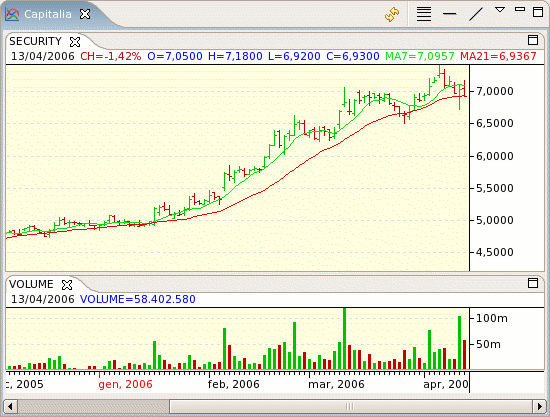

Chart views provides a graphical representation of the historical prices for a given security.

Use the right-click pop-up menu or the view's pull-down menu to add indicators and drawing objects to the chart that helps you to perform the technical analisys of the price trends.
Indicators can be added over existing indicators, on a new tab in the same row with other indicators or alone in a row.